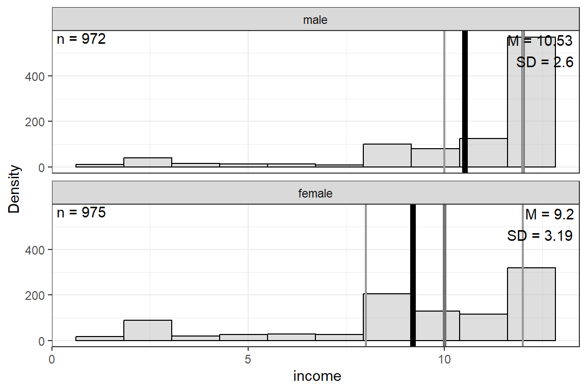
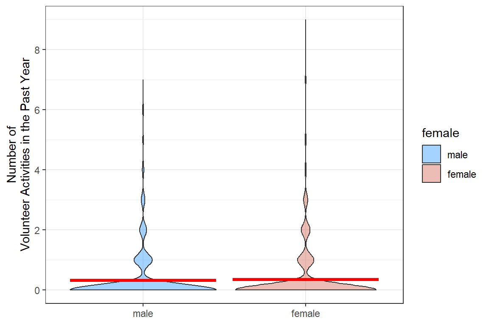

17 Ex: Count - GSS (Hoffman)
Compiled: August 26, 2025
17.1 PREPARATION
17.1.1 Load Packages
# library(remotes)
# remotes::install_github("sarbearschwartz/apaSupp") # updated: 4/22/25
# remotes::install_github("sarbearschwartz/texreghelpr")
# remotes::install_github("ddsjoberg/gtsummary")
library(tidyverse)
library(haven)
library(naniar)
library(furniture) # needs table1 for now...
library(apaSupp)
library(performance)
library(interactions)
library(texreg)
library(texreghelpr)
library(pscl) # Political Science Computational Laboratory (ZIP)17.1.2 Load Data
This dataset comes from John Hoffman’s textbook: Regression Models for Categorical, Count, and Related Variables: An Applied Approach (2004) Amazon link, 2014 edition
data_gss <- haven::read_spss("https://raw.githubusercontent.com/CEHS-research/data/master/Hoffmann_datasets/gss.sav") %>%
haven::as_factor() %>%
haven::zap_label() %>% # remove SPSS junk
haven::zap_formats() %>% # remove SPSS junk
haven::zap_widths() # remove SPSS junktibble [2,903 × 20] (S3: tbl_df/tbl/data.frame)
$ id : num [1:2903] 402 1473 1909 334 1751 ...
$ marital : Factor w/ 5 levels "married","widowed",..: 3 2 2 2 1 3 5 1 5 2 ...
$ divorce : Factor w/ 2 levels "yes","no": 1 2 2 1 2 1 2 1 2 2 ...
$ childs : Factor w/ 9 levels "0","1","2","3",..: 3 1 8 3 3 1 3 4 1 3 ...
$ age : num [1:2903] 54 24 75 41 37 40 36 33 18 35 ...
$ income : num [1:2903] 10 2 NA NA 12 NA 9 NA NA 6 ...
$ polviews: Factor w/ 7 levels "extreme liberal",..: 4 5 7 4 7 7 NA 4 4 4 ...
$ fund : Factor w/ 3 levels "fundamentalist",..: NA NA NA NA NA NA NA NA NA NA ...
$ attend : Factor w/ 9 levels "never","less than once a year",..: NA NA NA NA NA NA 7 4 3 4 ...
$ spanking: Factor w/ 4 levels "strongly agree",..: NA NA NA NA NA NA NA NA NA NA ...
$ totrelig: num [1:2903] NA NA NA NA NA NA NA 1000 NA NA ...
$ sei : num [1:2903] 38.9 29 29.1 29 38.1 ...
$ pasei : num [1:2903] NA 48.6 22.5 26.7 38.1 ...
$ volteer : num [1:2903] 0 0 0 1 1 0 0 0 1 0 ...
$ female : Factor w/ 2 levels "male","female": 2 1 2 2 1 2 2 2 2 1 ...
$ nonwhite: Factor w/ 2 levels "white","non-white": 2 1 2 1 1 1 2 1 2 1 ...
$ prayer : Factor w/ 6 levels "never","less than once a week",..: 5 4 5 4 4 4 5 4 4 4 ...
$ educate : num [1:2903] 12 17 8 12 12 NA 15 12 11 14 ...
$ volrelig: Factor w/ 2 levels "no","yes": 1 1 1 2 2 1 1 1 1 1 ...
$ polview1: Factor w/ 3 levels "liberal","moderate",..: 2 3 3 2 3 3 NA 2 2 2 ...Rows: 2,903
Columns: 5
$ volteer <dbl> 0, 0, 0, 1, 1, 0, 0, 0, 1, 0, 0, 1, 0, 0, 0, 1, 0, 0, 0, 0, 0…
$ female <fct> female, male, female, female, male, female, female, female, f…
$ nonwhite <fct> non-white, white, non-white, white, white, white, non-white, …
$ educate <dbl> 12, 17, 8, 12, 12, NA, 15, 12, 11, 14, 14, 12, 20, 12, 15, 20…
$ income <dbl> 10, 2, NA, NA, 12, NA, 9, NA, NA, 6, 12, 11, 12, 10, 12, 12, …17.2 Exploratory Data Analysis

17.2.1 Entire Sample
data_gss %>%
dplyr::mutate(volteer = factor(volteer)) %>%
dplyr::select(volteer) %>%
apaSupp::tab_freq()Statistic | ||
|---|---|---|
volteer | ||
0 | 2,376 (81.8%) | |
1 | 286 (9.9%) | |
2 | 133 (4.6%) | |
3 | 64 (2.2%) | |
4 | 19 (0.7%) | |
5 | 11 (0.4%) | |
6 | 7 (0.2%) | |
7 | 6 (0.2%) | |
9 | 1 (0.0%) | |
data_gss %>%
ggplot(aes(volteer)) +
geom_bar(color = "black", alpha = .4) +
theme_bw() +
labs(x = "Number of Volunteer Activities in the Past Year",
y = "Frequency") +
scale_x_continuous(breaks = seq(from = 0, to = 10, by = 1))
Figure 17.1
Hoffman Figure 6.3

Interpretation:
The self-reported number of times each person volunteered in the past year is a count (0, 1, 2, …) that does NOT follow the normal distribution.
17.2.2 By Sex
data_gss %>%
dplyr::mutate(volteer = factor(volteer)) %>%
dplyr::select(volteer, female) %>%
apaSupp::tab_freq(split = "female")male | female | Total | ||||
|---|---|---|---|---|---|---|
volteer | ||||||
0 | 1,057 (82.3%) | 1,319 (81.5%) | 2,376 (81.8%) | |||
1 | 132 (10.3%) | 154 (9.5%) | 286 (9.9%) | |||
2 | 50 (3.9%) | 83 (5.1%) | 133 (4.6%) | |||
3 | 26 (2.0%) | 38 (2.3%) | 64 (2.2%) | |||
4 | 10 (0.8%) | 9 (0.6%) | 19 (0.7%) | |||
5 | 4 (0.3%) | 7 (0.4%) | 11 (0.4%) | |||
6 | 5 (0.4%) | 2 (0.1%) | 7 (0.2%) | |||
7 | 1 (0.1%) | 5 (0.3%) | 6 (0.2%) | |||
9 | 0 (0.0%) | 1 (0.1%) | 1 (0.0%) | |||
data_gss %>%
dplyr::group_by(female) %>%
furniture::table1(volteer,
digits = 4,
total = TRUE,
test = TRUE)
─────────────────────────────────────────────────────────────────
female
Total male female P-Value
n = 2903 n = 1285 n = 1618
volteer 0.365
0.3334 (0.8858) 0.3167 (0.8493) 0.3467 (0.9139)
─────────────────────────────────────────────────────────────────
Two Sample t-test
data: volteer by female
t = -0.90608, df = 2901, p-value = 0.365
alternative hypothesis: true difference in means between group male and group female is not equal to 0
95 percent confidence interval:
-0.09489802 0.03491235
sample estimates:
mean in group male mean in group female
0.3167315 0.3467244 Interpretation:
Even though there are more women (n = 1818, 56%), the woman do report volunteering more over the past year (M = 0.35 vs. 0.32 time a year). This difference is NOT statistically significant when tested with an independent groups t-test, p = .365. The t-test does treat the volunteering variable as if it were normally distributed, which is not the case.
# A tibble: 1 × 2
mean var
<dbl> <dbl>
1 0.333 0.785Interpretation:
The number of self-reported volunteer activities is a count, but it is more dispersed that the Poisson distribution would expect. The over-dispersion is evident in that the variance (0.78) is much larger than the mean (0.33). This suggests that the Negative Binomial distribution may fit the data better than a Poisson distribution.
DV: Count Scale
data_gss %>%
ggplot(aes(x = female,
y = volteer)) +
geom_violin(aes(fill = female), alpha = .4) +
stat_summary(fun = mean, geom = "crossbar", color = "red") +
theme_bw() +
labs(y = "Number of\nVolunteer Activities in the Past Year",
x = NULL) +
scale_y_continuous(breaks = seq(from = 0, to = 10, by = 2)) +
scale_fill_manual(values = c("dodgerblue", "coral3"))
DV: Log of the Count Scale (plus a tiny amount)
data_gss %>%
dplyr::mutate(volteer_log = log(volteer + 0.01)) %>%
ggplot(aes(x = female,
y = volteer_log)) +
geom_violin(aes(fill = female), alpha = .4) +
stat_summary(fun = mean, geom = "crossbar", color = "red") +
theme_bw() +
labs(y = "Log of 0.01 + Number of\nVolunteer Activities in the Past Year",
x = NULL) +
scale_fill_manual(values = c("dodgerblue", "coral3"))
17.3 Simple Poisson Reression
Only use the single predictor: female
The simple model will give us the “Unadjusted” rates.
17.3.1 Fit the model
glm_possion_1 <- glm(volteer ~ female,
data = data_gss,
family = poisson(link = "log"))
summary(glm_possion_1)
Call:
glm(formula = volteer ~ female, family = poisson(link = "log"),
data = data_gss)
Coefficients:
Estimate Std. Error z value Pr(>|z|)
(Intercept) -1.14970 0.04957 -23.19 <2e-16 ***
femalefemale 0.09048 0.06511 1.39 0.165
---
Signif. codes: 0 '***' 0.001 '**' 0.01 '*' 0.05 '.' 0.1 ' ' 1
(Dispersion parameter for poisson family taken to be 1)
Null deviance: 3658.1 on 2902 degrees of freedom
Residual deviance: 3656.2 on 2901 degrees of freedom
AIC: 4924.1
Number of Fisher Scoring iterations: 6Interpretation:
The intercept is the predicted log(count) when all the predictors are
equal to zero (or the reference category for factors). Since the only
predictor in this model is female, the IRR = -1.15 is for
males and is statistically significant, p < .001.
The parameter estimate for the categorical predictor
female capture how different the log(count) is for female,
compared to males. This is not statistically significant, p = .165.
Thus far, there is no evidence that males and females volunteer more or less, on average (marginally).
Note: The deviance residuals range as high as 6.47!!! That is quite high for a z-score.
17.3.2 Parameter Estimates
Family: poisson
Link function: log 17.3.2.1 Link Scale
Coefficients are in terms of the LOG of the number of times a person volunteers per year, or log(IRR).
(Intercept) femalefemale
-1.14970081 0.09047562 17.3.2.2 Count Scale
Exponentiation of the coefficients (betas) returns the values to the original scale (number of times a person volunteers per year) and is referred to as the incident rate ratio (IRR).
(Intercept) femalefemale
0.3167315 1.0946948 Incident Rate Ratio | Log Scale | ||||||
|---|---|---|---|---|---|---|---|
Variable | IRR | 95% CI | b | (SE) | p | ||
(Intercept) | 0.32 | [0.29, 0.35] | -1.15 | (0.05) | < .001*** | ||
female | |||||||
male | — | — | — | — | |||
female | 1.09 | [0.96, 1.24] | .1 | (0.07) | .165 | ||
pseudo-R² | < .001 | ||||||
Note. N = 2903. CI = confidence interval. Significance denotes Wald t-tests for parameter estimates. Coefficient of determination displays Nagelkerke's pseudo-R². | |||||||
* p < .05. ** p < .01. *** p < .001. | |||||||
17.3.3 Predictions
17.3.3.1 Link Scale
Note: Results are given on the log (not the response) scale
female emmean SE df asymp.LCL asymp.UCL
male -1.15 0.0496 Inf -1.25 -1.053
female -1.06 0.0422 Inf -1.14 -0.976
Results are given on the log (not the response) scale.
Confidence level used: 0.95 Interpretation:
Males have a lower log(count) than females, but this difference is not significant due to the good deal of overlap in the confidence intervals.
17.3.3.2 Count Scale:
Note: These means are on the original scale (number of volunteer activities in the past year).
These standard errors ARE the so-called “delta-method standard errors” that Stat gives.
female rate SE df asymp.LCL asymp.UCL
male 0.317 0.0157 Inf 0.287 0.349
female 0.347 0.0146 Inf 0.319 0.377
Confidence level used: 0.95
Intervals are back-transformed from the log scale These standard errors are NOT the so-called “delta-method standard errors” that Stat gives.
# Hoffmann Example 6.4 (continued...)
ggeffects::ggemmeans(model = glm_possion_1,
terms = c("female")) %>%
data.frame()# A tibble: 2 × 6
x predicted std.error conf.low conf.high group
<fct> <dbl> <dbl> <dbl> <dbl> <fct>
1 male 0.317 0.0496 0.287 0.349 1
2 female 0.347 0.0422 0.319 0.377 1 [1] 1.094727Interpretation:
The marginal count/year or rate is: * 0.32 times/year for males * 0.35 times/year for females
The incident rate ratio (IRR) is: * 9% more times higher, for females compared to males
17.4 Multiple Poisson Regression
Only using multiple predictors: female, nonwhite, educate, and income
The more compled model will give us the “Adjusted” rates
17.4.1 Fit the model
# Hoffmann Example 6.5
glm_possion_2 <- glm(volteer ~ female + nonwhite + educate + income,
data = data_gss,
family = poisson(link = "log"))
summary(glm_possion_2)
Call:
glm(formula = volteer ~ female + nonwhite + educate + income,
family = poisson(link = "log"), data = data_gss)
Coefficients:
Estimate Std. Error z value Pr(>|z|)
(Intercept) -3.15830 0.24479 -12.902 < 2e-16 ***
femalefemale 0.26132 0.07785 3.357 0.000789 ***
nonwhitenon-white -0.28038 0.10838 -2.587 0.009681 **
educate 0.10280 0.01443 7.123 1.05e-12 ***
income 0.05683 0.01566 3.628 0.000286 ***
---
Signif. codes: 0 '***' 0.001 '**' 0.01 '*' 0.05 '.' 0.1 ' ' 1
(Dispersion parameter for poisson family taken to be 1)
Null deviance: 2566.8 on 1943 degrees of freedom
Residual deviance: 2465.5 on 1939 degrees of freedom
(959 observations deleted due to missingness)
AIC: 3380.9
Number of Fisher Scoring iterations: 617.4.2 Parameter Estimates
apaSupp::tab_glm(glm_possion_2,
var_labels = c(female = "Female vs Male",
nonwhite = "Nonwhite vs White",
educate = "Education",
income = "Income"),
show_single_row = c("female", "nonwhite"),
p_note = "apa23")Incident Rate Ratio | Log Scale | ||||||||
|---|---|---|---|---|---|---|---|---|---|
Variable | IRR | 95% CI | b | (SE) | Wald | LRT | VIF | ||
(Intercept) | 0.04 | [0.03, 0.07] | -3.16 | (0.24) | < .001*** | ||||
Female vs Male | 1.30 | [1.12, 1.51] | 0.26 | (0.08) | < .001*** | < .001*** | 1.05 | ||
Nonwhite vs White | 0.76 | [0.61, 0.93] | -0.28 | (0.11) | .010** | .008** | 1.01 | ||
Education | 1.11 | [1.08, 1.14] | 0.10 | (0.01) | < .001*** | < .001*** | 1.07 | ||
Income | 1.06 | [1.03, 1.09] | 0.06 | (0.02) | < .001*** | < .001*** | 1.11 | ||
pseudo-R² | .069 | ||||||||
Note. N = 1944. CI = confidence interval; VIF = variance inflation factor. Significance denotes Wald t-tests for individual parameter estimates, as well as Likelihood Ratio Tests (LRT) for single-predictor deletion. Coefficient of determination displays Nagelkerke's pseudo-R². | |||||||||
** p < .01. *** p < .001. | |||||||||
Interpretation:
-
female: Adjusting for the effects of race, education, and income, FEMALES are expected to volunteer about 30% MORE activities per year than males, IRR = 1.29, p < .001. -
nonwhite: Adjusting for the effects of sex, education, and income, NON-WHITES are expected to volunteer for about 24% LESS activities per year than males, IRR = 0.76, p = .001. -
educate: Each one-year increase in education is associated with an 11% increase in the number of volunteer activities per year, adjusting for the effects of sex, race/ethnicity, and income, IRR = 1.11, p <.001. -
income: Each additional $1000 a household makes is associated with a 6% increase in the number of times a person volunteers per year, controlling for sex, race, and education, IRR = 1.06, p < .001.
17.4.3 Predictions
Note: These means are on the original scale (number of volunteer activities in the past year). Stata calculates so-called “delta-method standard errors” , but they are not calculated here in R.
ggeffects::ggemmeans(model = glm_possion_2,
terms = c("female"),
condition = c(nonwhite = "white",
educate = 12,
income = 5))# A tibble: 2 × 6
x predicted std.error conf.low conf.high group
<fct> <dbl> <dbl> <dbl> <dbl> <fct>
1 male 0.194 0.109 0.157 0.240 1
2 female 0.252 0.0952 0.209 0.303 1 [1] 0.3157895[1] 1.315789Interpretation:
The expected number of volunteer activities in a year among females is 31.5% higher than among males, for white high school graduates with low income.
Note:
income= 5 is the 10th percentile of the income distribution.
17.4.4 Assess Model Fit
McFadden
0.02918402 McFadden McFaddenAdj CoxSnell Nagelkerke AldrichNelson
0.029 0.026 0.051 0.061 0.050
VeallZimmermann Efron McKelveyZavoina Tjur AIC
0.077 0.020 NA NA 3380.860
BIC logLik logLik0 G2
3408.722 -1685.430 -1736.096 101.333 Interpretation:
Although these four predictors (sex, race, education, and income) are associated with differences in the number of times a person volunteers annually, together they account for very little of the variance, \(R^2_{McF} = .029\), \(R^2_{Nag} = .061\).
17.4.5 Residual Diagnostics

Interpretation:
These residuals do NOT look good, especially the Q-Q plot for normality.
17.4.6 Marginal Plot
# A tibble: 2 × 9
vars n mean sd median min max range se
<int> <dbl> <dbl> <dbl> <dbl> <dbl> <dbl> <dbl> <dbl>
1 1 2894 13.4 2.93 13 0 20 20 0.0544
2 2 1947 9.86 2.99 11 1 12 11 0.0677 educate income
Min. : 0.00 Min. : 1.000
1st Qu.:12.00 1st Qu.: 9.000
Median :13.00 Median :11.000
Mean :13.36 Mean : 9.862
3rd Qu.:16.00 3rd Qu.:12.000
Max. :20.00 Max. :12.000
NA's :9 NA's :956 interactions::interact_plot(model = glm_possion_2,
pred = educate,
modx = female,
mod2 = nonwhite) +
theme_bw()
ggeffects::ggemmeans(model = glm_possion_2,
terms = "educate",
condition = c(female = "male",
nonwhite = "white",
incomeN = 11)) %>%
data.frame %>%
ggplot(aes(x = x,
y = predicted)) +
geom_line() +
labs(x = "Years of Formal Education",
y = "Predicted Number of Volunteer Activities",
title = "White Males with median Income (11) ")
Figure 17.2
Hoffmann’s Figure 6.5

effects::Effect(focal.predictors = c("female", "nonwhite", "educate", "income"),
mod = glm_possion_2,
xlevels = list(educate = seq(from = 0, to = 20, by = .1),
income = c(8, 10, 12))) %>%
data.frame() %>%
dplyr::mutate(income = factor(income) %>%
forcats::fct_recode("Lower Income (8)" = "8",
"Middle Income (10)" = "10",
"Higher Income (12)" = "12")) %>%
ggplot(aes(x = educate,
y = fit)) +
geom_ribbon(aes(ymin = fit - se, # bands = +/- 1 SEM
ymax = fit + se,
fill = female),
alpha = .2) +
geom_line(aes(linetype = female,
color = female),
size = 1) +
theme_bw() +
labs(x = "Education, Years",
y = "Predicted Mean Number of Volunteer Activities",
color = NULL,
fill = NULL,
linetype = NULL) +
theme(legend.position = c(0, 1),
legend.justification = c(-.1, 1.1),
legend.background = element_rect(color = "black"),
legend.key.width = unit(2, "cm")) +
facet_grid(nonwhite ~ income)effects::Effect(focal.predictors = c("female", "nonwhite", "educate", "income"),
mod = glm_possion_2,
xlevels = list(educate = seq(from = 0, to = 20, by = .1),
income = c(5, 8, 12))) %>%
data.frame() %>%
dplyr::mutate(income = factor(income)) %>%
ggplot(aes(x = educate,
y = fit)) +
geom_line(aes(linetype = fct_rev(income),
color = fct_rev(income)),
size = 1) +
theme_bw() +
labs(x = "Education, Years",
y = "Predicted Mean Number of Volunteer Activities",
color = "Income:",
fill = "Income:",
linetype = "Income:") +
theme(legend.position = c(0, 1),
legend.justification = c(-.1, 1.1),
legend.background = element_rect(color = "black"),
legend.key.width = unit(2, "cm")) +
facet_grid(nonwhite ~ female) +
scale_linetype_manual(values = c("solid", "longdash", "dotted"))effects::Effect(focal.predictors = c("female", "nonwhite", "educate", "income"),
mod = glm_possion_2,
xlevels = list(educate = seq(from = 0, to = 20, by = .1),
income = c(8, 10, 12))) %>%
data.frame() %>%
dplyr::mutate(income = factor(income) %>%
forcats::fct_recode("Lower Income (8)" = "8",
"Middle Income (10)" = "10",
"Higher Income (12)" = "12")) %>%
ggplot(aes(x = educate,
y = fit)) +
geom_ribbon(aes(ymin = fit - se, # bands = +/- 1 SEM
ymax = fit + se,
fill = nonwhite),
alpha = .2) +
geom_line(aes(linetype = nonwhite,
color = nonwhite),
size = 1) +
theme_bw() +
labs(x = "Education, Years",
y = "Predicted Mean Number of Volunteer Activities",
color = NULL,
fill = NULL,
linetype = NULL) +
theme(legend.position = c(0, .5),
legend.justification = c(-.05, 1.1),
legend.background = element_rect(color = "black"),
legend.key.width = unit(2, "cm")) +
facet_grid(female ~ income) +
scale_color_manual(values = c("darkgreen", "orange")) +
scale_fill_manual(values = c("darkgreen", "orange"))
effects::Effect(focal.predictors = c("female", "educate"),
mod = glm_possion_2,
xlevels = list(educate = seq(from = 0,
to = 20,
by = .1),
income = 11)) %>% #Median Income
data.frame() %>%
ggplot(aes(x = educate,
y = fit,
group = female)) +
geom_ribbon(aes(ymin = fit - se, # bands = +/- 1 SEM
ymax = fit + se),
alpha = .2) +
geom_line(aes(linetype = female),
size = 1) +
theme_bw() +
labs(x = "Education, Years",
y = "Predicted Mean Number of Volunteer Activities",
color = NULL,
fill = NULL,
linetype = NULL) +
theme(legend.position = c(0, 1),
legend.justification = c(-.1, 1.1),
legend.background = element_rect(color = "black"),
legend.key.width = unit(2, "cm")) +
scale_linetype_manual(values = c("solid", "longdash"))
17.5 Negative Binomial Regression
17.5.1 Multiple Predictors
17.5.1.1 Fit the model
glm_negbin_1 <- MASS::glm.nb(volteer ~ female + nonwhite + educate + income,
data = data_gss)
summary(glm_negbin_1)
Call:
MASS::glm.nb(formula = volteer ~ female + nonwhite + educate +
income, data = data_gss, init.theta = 0.2559648877, link = log)
Coefficients:
Estimate Std. Error z value Pr(>|z|)
(Intercept) -3.24738 0.37283 -8.710 < 2e-16 ***
femalefemale 0.28441 0.12312 2.310 0.0209 *
nonwhitenon-white -0.31107 0.16203 -1.920 0.0549 .
educate 0.11200 0.02321 4.825 1.4e-06 ***
income 0.05193 0.02264 2.293 0.0218 *
---
Signif. codes: 0 '***' 0.001 '**' 0.01 '*' 0.05 '.' 0.1 ' ' 1
(Dispersion parameter for Negative Binomial(0.256) family taken to be 1)
Null deviance: 1068.5 on 1943 degrees of freedom
Residual deviance: 1024.3 on 1939 degrees of freedom
(959 observations deleted due to missingness)
AIC: 2851.6
Number of Fisher Scoring iterations: 1
Theta: 0.2560
Std. Err.: 0.0251
2 x log-likelihood: -2839.5640 Note: the deviance residuals all have absolute values less than 3-4’ish…better than before
Theta in R = 1/alpha in Stata
# Hoffmann Example 6.5
texreg::knitreg(list(glm_possion_2,
texreghelpr::extract_glm_exp(glm_possion_2,
include.aic = FALSE,
include.bic = FALSE,
include.loglik = FALSE,
include.deviance = FALSE,
include.nobs = FALSE)),
custom.model.names = c("b (SE)", "IRR [95% CI]"),
custom.coef.map = list("(Intercept)" ="Intercept",
femalefemale = "Female vs. Male",
"nonwhitenon-white" = "Non-white vs. White",
educate = "Education, years",
income = "Income, 1000's"),
caption = "GLM: Multiple Possion Regression",
single.row = TRUE,
digits = 3)| b (SE) | IRR [95% CI] | |
|---|---|---|
| Intercept | -3.158 (0.245)*** | 0.042 [0.026; 0.068]* |
| Female vs. Male | 0.261 (0.078)*** | 1.299 [1.115; 1.513]* |
| Non-white vs. White | -0.280 (0.108)** | 0.755 [0.608; 0.930]* |
| Education, years | 0.103 (0.014)*** | 1.108 [1.077; 1.140]* |
| Income, 1000’s | 0.057 (0.016)*** | 1.058 [1.027; 1.092]* |
| AIC | 3380.860 | |
| BIC | 3408.722 | |
| Log Likelihood | -1685.430 | |
| Deviance | 2465.514 | |
| Num. obs. | 1944 | |
| ***p < 0.001; **p < 0.01; *p < 0.05 (or Null hypothesis value outside the confidence interval). | ||
17.5.1.2 Predictions
Note: These means are on the original scale (number of volunteer activities in the past year). These standard errors are called “delta-method standard errors”
effects::Effect(focal.predictors = c("female"),
mod = glm_negbin_1,
xlevels = list(nonwhite = "non-white",
educate = 5,
income = 12)) %>%
data.frame()# A tibble: 2 × 5
female fit se lower upper
<fct> <dbl> <dbl> <dbl> <dbl>
1 male 0.289 0.0257 0.243 0.344
2 female 0.384 0.0322 0.326 0.453ggeffects::ggemmeans(model = glm_negbin_1,
terms = c("female"),
condition = c(nonwhite = "white",
educate = 12,
income = 5))# A tibble: 2 × 6
x predicted std.error conf.low conf.high group
<fct> <dbl> <dbl> <dbl> <dbl> <fct>
1 male 0.193 0.157 0.142 0.263 1
2 female 0.257 0.137 0.196 0.336 1 Compare to the Poisson:
ggeffects::ggemmeans(model = glm_possion_2,
terms = c("female"),
condition = c(nonwhite = "white",
educate = 12,
income = 5))# A tibble: 2 × 6
x predicted std.error conf.low conf.high group
<fct> <dbl> <dbl> <dbl> <dbl> <fct>
1 male 0.194 0.109 0.157 0.240 1
2 female 0.252 0.0952 0.209 0.303 1 Note: The predictions are very similar for Poisson and Negative Binomial…therefor the overdisperssion does not affect the sex difference much, but it may affect other things…
17.5.1.3 Parameter Estimates
Coefficients are in terms of the LOG of the number of times a person volunteers per year.
(Intercept) femalefemale nonwhitenon-white educate
-3.24738340 0.28440826 -0.31107286 0.11199528
income
0.05193102 Exponentiating the coefficients (betas) returns the values to the original scale (number of times a person volunteers per year) and is called the incident rate ratio IRR.
(Intercept) femalefemale nonwhitenon-white educate
0.0388758 1.3289754 0.7326605 1.1185076
income
1.0533031 texreg::knitreg(list(glm_negbin_1,
texreghelpr::extract_glm_exp(glm_negbin_1,
include.aic = FALSE,
include.bic = FALSE,
include.loglik = FALSE,
include.deviance = FALSE,
include.nobs = FALSE)),
custom.model.names = c("b (SE)", "IRR [95% CI]"),
custom.coef.map = list("(Intercept)" ="Intercept",
femalefemale = "Female vs. Male",
"nonwhitenon-white" = "Non-white vs. White",
educate = "Education, Years",
income = "Income"),
caption = "GLM: Negitive Binomial Regression",
single.row = TRUE,
digits = 3)| b (SE) | IRR [95% CI] | |
|---|---|---|
| Intercept | -3.247 (0.373)*** | 0.039 [0.018; 0.081]* |
| Female vs. Male | 0.284 (0.123)* | 1.329 [1.043; 1.696]* |
| Non-white vs. White | -0.311 (0.162) | 0.733 [0.533; 1.008]* |
| Education, Years | 0.112 (0.023)*** | 1.119 [1.067; 1.173]* |
| Income | 0.052 (0.023)* | 1.053 [1.008; 1.101]* |
| AIC | 2851.564 | |
| BIC | 2884.999 | |
| Log Likelihood | -1419.782 | |
| Deviance | 1024.343 | |
| Num. obs. | 1944 | |
| ***p < 0.001; **p < 0.01; *p < 0.05 (or Null hypothesis value outside the confidence interval). | ||
17.5.1.5 Compare models
# A tibble: 2 × 11
Name Model R2_Nagelkerke RMSE Sigma Score_log Score_spherical AIC_wt
<chr> <chr> <dbl> <dbl> <dbl> <dbl> <dbl> <dbl>
1 glm_negbi… negb… 0.0531 0.919 1 -0.808 0.0210 1 e+ 0
2 glm_possi… glm 0.0693 0.918 1 -0.867 0.0210 1.16e-115
# ℹ 3 more variables: AICc_wt <dbl>, BIC_wt <dbl>, Performance_Score <dbl>17.6 Zero Inflated Poisson
17.6.1 Fit the model
glm_zip_1 <- pscl::zeroinfl(volteer ~ female + nonwhite + educate + income | educate,
data = data_gss)
summary(glm_zip_1)
Call:
pscl::zeroinfl(formula = volteer ~ female + nonwhite + educate + income |
educate, data = data_gss)
Pearson residuals:
Min 1Q Median 3Q Max
-0.5778 -0.4416 -0.3908 -0.3383 9.4777
Count model coefficients (poisson with log link):
Estimate Std. Error z value Pr(>|z|)
(Intercept) -1.09660 0.34808 -3.150 0.00163 **
femalefemale 0.20615 0.09452 2.181 0.02918 *
nonwhitenon-white -0.20101 0.13444 -1.495 0.13488
educate 0.05648 0.02140 2.639 0.00833 **
income 0.04888 0.01882 2.597 0.00940 **
Zero-inflation model coefficients (binomial with logit link):
Estimate Std. Error z value Pr(>|z|)
(Intercept) 2.01161 0.41192 4.883 1.04e-06 ***
educate -0.07179 0.02768 -2.593 0.00951 **
---
Signif. codes: 0 '***' 0.001 '**' 0.01 '*' 0.05 '.' 0.1 ' ' 1
Number of iterations in BFGS optimization: 18
Log-likelihood: -1434 on 7 Df count_(Intercept) count_femalefemale count_nonwhitenon-white
0.3340048 1.2289390 0.8179079
count_educate count_income zero_(Intercept)
1.0581037 1.0500947 7.4753687
zero_educate
0.9307240 Compares two models fit to the same data that do not nest via Vuong’s non-nested test.
Vuong Non-Nested Hypothesis Test-Statistic:
(test-statistic is asymptotically distributed N(0,1) under the
null that the models are indistinguishible)
-------------------------------------------------------------
Vuong z-statistic H_A p-value
Raw 8.000302 model1 > model2 6.6613e-16
AIC-corrected 7.936568 model1 > model2 9.9920e-16
BIC-corrected 7.758989 model1 > model2 4.3299e-1517.7 Zero Inflated Negative Binomial
17.7.1 Fit the model
glm_zinb_1 <- pscl::zeroinfl(volteer ~ female + nonwhite + educate + income | educate,
data = data_gss,
dist = "negbin")
summary(glm_zinb_1)
Call:
pscl::zeroinfl(formula = volteer ~ female + nonwhite + educate + income |
educate, data = data_gss, dist = "negbin")
Pearson residuals:
Min 1Q Median 3Q Max
-0.5146 -0.4122 -0.3704 -0.3222 8.8088
Count model coefficients (negbin with log link):
Estimate Std. Error z value Pr(>|z|)
(Intercept) -1.79278 0.54745 -3.275 0.00106 **
femalefemale 0.26245 0.11745 2.235 0.02545 *
nonwhitenon-white -0.28519 0.15603 -1.828 0.06758 .
educate 0.06817 0.03317 2.055 0.03987 *
income 0.05292 0.02159 2.451 0.01426 *
Log(theta) 0.05056 0.46242 0.109 0.91293
Zero-inflation model coefficients (binomial with logit link):
Estimate Std. Error z value Pr(>|z|)
(Intercept) 1.28322 0.71435 1.796 0.0724 .
educate -0.07208 0.04684 -1.539 0.1238
---
Signif. codes: 0 '***' 0.001 '**' 0.01 '*' 0.05 '.' 0.1 ' ' 1
Theta = 1.0519
Number of iterations in BFGS optimization: 33
Log-likelihood: -1416 on 8 Df count_(Intercept) count_femalefemale count_nonwhitenon-white
0.1664962 1.3001110 0.7518708
count_educate count_income zero_(Intercept)
1.0705424 1.0543416 3.6082563
zero_educate
0.9304550 17.8 Compare Models
Vuong Non-Nested Hypothesis Test-Statistic:
(test-statistic is asymptotically distributed N(0,1) under the
null that the models are indistinguishible)
-------------------------------------------------------------
Vuong z-statistic H_A p-value
Raw 1.3486325 model1 > model2 0.088728
AIC-corrected 0.5592035 model1 > model2 0.288011
BIC-corrected -1.6403440 model2 > model1 0.050467Vuong Non-Nested Hypothesis Test-Statistic:
(test-statistic is asymptotically distributed N(0,1) under the
null that the models are indistinguishible)
-------------------------------------------------------------
Vuong z-statistic H_A p-value
Raw -2.428612 model2 > model1 0.0075784
AIC-corrected -2.428612 model2 > model1 0.0075784
BIC-corrected -2.428612 model2 > model1 0.0075784performance::compare_performance(glm_possion_2, glm_zip_1,
glm_negbin_1, glm_zinb_1) %>%
data.frame() %>%
dplyr::select(Name, AICc, BIC, RMSE,
R2, R2_adjusted, R2_Nagelkerke) %>%
dplyr::mutate(across(starts_with("R2"), ~apaSupp::p_num(.x, stars = FALSE))) %>%
flextable::flextable() %>%
apaSupp::theme_apa(caption = "Compare Model Fits")Name | AICc | BIC | RMSE | R2 | R2_adjusted | R2_Nagelkerke |
|---|---|---|---|---|---|---|
glm_possion_2 | 3,380.89 | 3,408.72 | 0.92 | .069 | ||
glm_zip_1 | 2,882.81 | 2,921.76 | 0.92 | .016 | .013 | |
glm_negbin_1 | 2,851.61 | 2,885.00 | 0.92 | .053 | ||
glm_zinb_1 | 2,848.80 | 2,893.31 | 0.92 | .020 | .018 |
The ‘best’ model is the zero-inflated negative binomial
## Final
glm_possion_2 %>%
emmeans::emmeans(~ female + educate + income,
at = list(educate = seq(from = 8,
to = 18,
by = .1),
income = c(8, 10, 12)),
type = "response") %>%
data.frame() %>%
dplyr::mutate(income = factor(income) %>%
forcats::fct_recode("Lower Income (8)" = "8",
"Middle Income (10)" = "10",
"Higher Income (12)" = "12")) %>%
dplyr::mutate(income = forcats::fct_rev(income)) %>%
dplyr::mutate(female = forcats::fct_rev(female)) %>%
ggplot(aes(x = educate,
y = rate)) +
geom_vline(xintercept = 12) +
geom_line(aes(linetype = income,
color = female),
size = 1) +
theme_bw() +
labs(x = "Education, Years",
y = "Predicted Rate\nVolunteer Activities in the Prior Year",
color = NULL,
fill = NULL,
linetype = NULL) +
theme(legend.position = c(0, 1),
legend.justification = c(-.1, 1.1),
legend.background = element_rect(color = "black"),
legend.key.width = unit(2, "cm")) +
scale_linetype_manual(values = c("solid", "longdash", "dotted")) +
scale_x_continuous(breaks = seq(from = 8, to = 20, by = 2))
Figure 17.3
Worst Model: Poisson
glm_zinb_1 %>%
emmeans::emmeans(~ female + educate + income,
at = list(educate = seq(from = 8,
to = 18,
by = .1),
income = c(8, 10, 12)),
type = "response") %>%
data.frame() %>%
dplyr::mutate(income = factor(income) %>%
forcats::fct_recode("Lower Income (8)" = "8",
"Middle Income (10)" = "10",
"Higher Income (12)" = "12")) %>%
dplyr::mutate(income = forcats::fct_rev(income)) %>%
dplyr::mutate(female = forcats::fct_rev(female)) %>%
ggplot(aes(x = educate,
y = emmean)) +
geom_vline(xintercept = 12) +
geom_line(aes(linetype = income,
color = female),
size = 1) +
theme_bw() +
labs(x = "Education, Years",
y = "Predicted Rate\nVolunteer Activities in the Prior Year",
color = NULL,
fill = NULL,
linetype = NULL) +
theme(legend.position = c(0, 1),
legend.justification = c(-.1, 1.1),
legend.background = element_rect(color = "black"),
legend.key.width = unit(2, "cm")) +
scale_linetype_manual(values = c("solid", "longdash", "dotted")) +
scale_x_continuous(breaks = seq(from = 8, to = 20, by = 2))
Figure 17.4
Best Model: Zero Inflated Negative Binomial